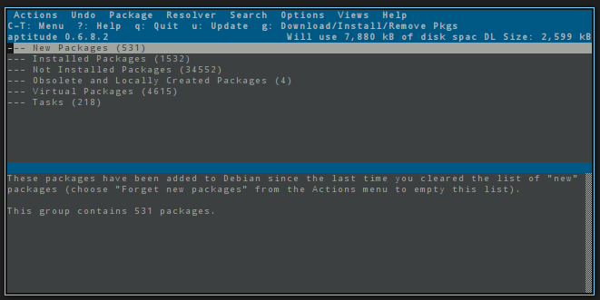
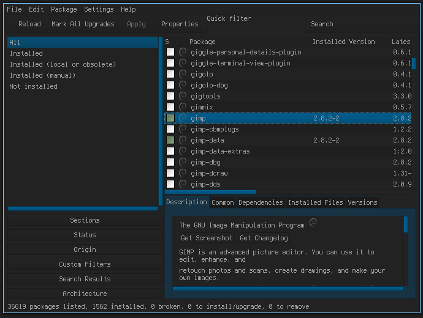

lang fr|gb

Debian packages managment
livarp has three tools to update repositories, install or uninstall Debian packages:
- the terminal with the apt-get or aptitude commands
- aptitude , the command-line interface of the 'aptitude' command. 
- synaptic, the graphical user interface to apt-get, available from all livarp menus, section system: packages manager. 